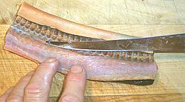

[Rice Eel, Asian Swamp Eel; Luon Nguyen Con (Viet); Monopterus albus]
This eel is native to Southeast Asia, China, Japan, and possibly Bangladesh. A very similar but smaller eel, M. cuchia is found from Pakistan through Bangladesh and Burma. M. albus can grow to a little over 39 inches but the photo specimen, bought off the ice (previously frozen) at an Asian market in California, was 32 inches and weighed 1.1 pound factory cleaned. This eel is in no way endangered and can be a pest. Feel free to eat as many as you'd like.
Morons have released some in the Southeast U.S. and Hawaii so they are now found in Hawaii, Georgia and Florida, and are starting to invade the Mississippi river with resulting ecological damage. They are extremely durable, can live a long time without water (they tunnel deep during drought), can travel over land, and tolerate brackish water and freezing temperatures. They also reproduce much faster than freshwater eels because they don't bother with the trip out to sea for spawning (or the dying part either).
Swamp Eels are easy to tell from freshwater eels because they have tiny eyes way up near the tip of the nose, the tail tapers to a point, they have only one gill slot per side, under the head, and they have no fins (pectoral, pelvic, dorsal, anal or caudal) but at most a fold of skin back at the tail end.
More on Varieties of Fish
(very large page)
Fillet

|
This fish has become popular enough that it's being farm raised in Vietnam. The flesh of this fish is medium flavor and still very firm when wet cooked. It does not flake, but breaks up easily. It will work fine in soups and stews. In texture and flavor it reminds me somewhat of shark, though they are in no way whatever related. I rather like this fish as poached fillets, served with my standard Lemon Wine Sauce. The flavor is good, and I like the contrast between the firm flesh and the gelatinous skin. Skin-on fillets don't curl much when added to the poaching liquid. Buying: This fish is fairly common in the large Asian fish markets here in Southern California, either on ice, or frozen, curled up in a shrink wrapped foam tray. The photo specimen was purchased from a large Asian market in Los Angeles (San Gabriel). Scales: None. This fish makes no attempt to be Kosher. Cleaning: In my experience, they are always factory cleaned before shipping to North America. There's plenty inside them as the body cavity extends from the head to not far from the tip or the tail. Skin: The skin on this eel shrinks like crazy when fried, but so does the membrane on the inside of body cavity. frying fillets skin-on or skin-off is going to result in some twisted fish. It does not curl much with wet cooking as the skin becomes gelatinous almost instantly. Fillet: You would think a fish with a narrow body cavity over 2 feet long would be a real rib problem, but this fish doesn't actually have any ribs. It has a long backbone with short projections where ribs should be, but they go no farther.
|